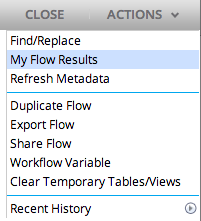

My Flow Results
To view results of previously run flows, select 'My Flow Results' from the Actions drop-down menu.

- Flows run by the current user will be displayed along with the flow version, start time, and end time.
- Select a flow and click Show Result to view the results of the flow in a new window. Select a flow and click Delete to remove the results from "My Flow Results".
- To filter the results by Flow Name, choose a flow from the Flow Name Filter drop-down menu.